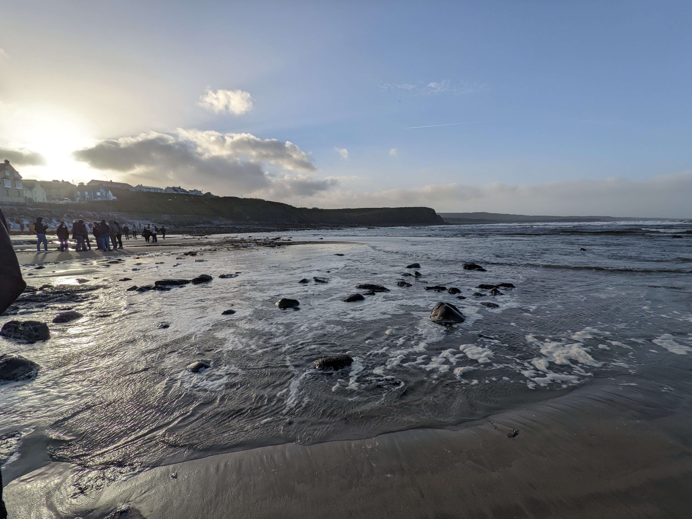
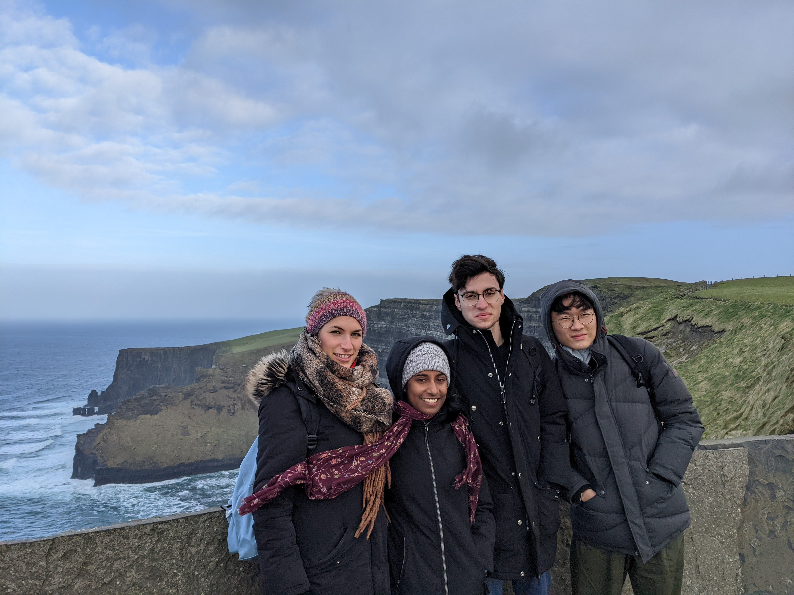

| Monday | Tuesday | Wednesday | Thursday | Friday |
|---|---|---|---|---|
| Data Structures + Algorithms (4pm-5pm) | Irish Traditional Music (10am-11am) | Data Structures + Algorithms (12pm-1pm) | Irish Traditional Music (10am-11am) | Data Structures + Algorithms Lab (10am-11am) |
| Introduction to Web Development (9am-10am) | Data Structures + Algorithms (11am-12pm) | Introduction to Web Development (9am-10am) | Irish Dance Tutorial (1pm-2pm) | Performance Technology (11am-12pm) |
| Introduction to Web Development Lab (2pm-4pm) | Performance Technology (4pm-6pm) |
The Cliffs of Moher + The Burren
Touring Ireland's Natural Wonders
This weekend we took our first sightseeing trip in Ireland. We went to see one of Ireland's most famous natural wonders: the Cliffs of Moher. We had to wake up quite early at 7 am to prepare and catch our bus at 8 am. I sat next to Marie on the bus and we talked a lot about the weather and landscapes in our respective countries.
The Cliffs are located on the coast of County Clare, about an hour's drive to the northwest from Limerick. We first stopped at Lahinch Beach, which is at the foot of the cliffs. I felt a bit of nostalgia for Charleston's beaches but one thing that they do not share in common with an Irish beach is good weather. It was freezing and so so so windy!! I felt that I was about to fly away!! And I couldn't believe my eyes, but I saw some people dipping their feet into the ocean and even surfing 😲
There were lots of rocks along the beach, which we climbed to get a better view of it all. However, the tide was coming in, so we often had to scramble precariously across the rocks. I think it's safe to say that this beach is a better place for pictures than it is for relaxation.
Our bus then took us to the Cliffs of Moher Walk, where we once again braved the strong winds to admire the beautiful cliffs. They are truly a work of natural art! Especially when the sun came out, one could see how deep the blue of the water was and how bright the green grass could be. It was also nice to just gaze out at the Atlantic and get lost for a while. As my roommate Yoann put it, "from here, the next stop is America". As someone who has been on both sides of the Atlantic, I can confidently say that the view is terrific from both 😁
While Marie and I were walking back to the bus, we passed an Irish boy who just happened to burp super loud. It was such a big noise that I had thought a seagull was nearby. We both burst out into laughter and the guy just laughed it off and said "Cheers" 🤣
Next, we visited the Burren. The Burren is a karst, a kind of landform that is made up when rocks like limestone are dissolved. Apparently, farmers used to let their cattle graze across the Burren. It kinda felt like we were standing on the surface of the Moon. Finally, we visited Poulnabrone dolmen. This is an ancient tomb that dates back to between 3800 to 3200 BC.
I've realized that the landscapes of Ireland remind me a lot of where I used to live in Kentucky. The green grass, limestone, rolling hills, and freshwater everywhere are very characteristic of both places. I'd say Kentucky has a lot more mountains than Ireland though.
Also, I have received my schedule (see below). At most, I have three classes on Thursday and just two on Mondays, Wednesdays, and Fridays:

